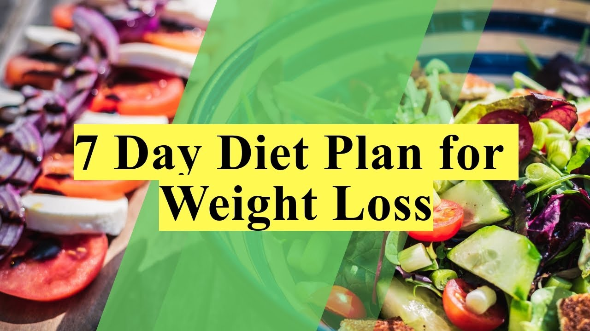
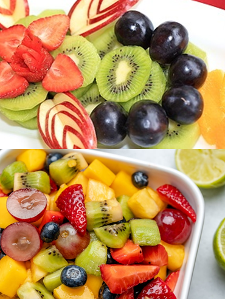
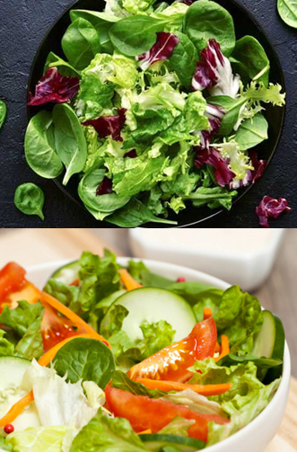
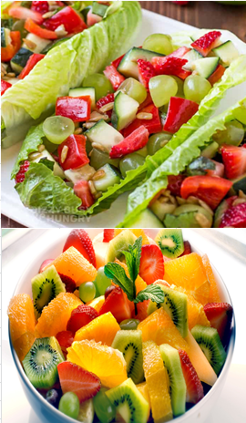
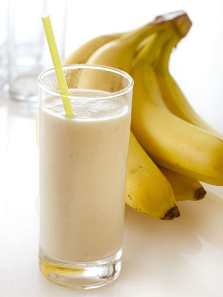
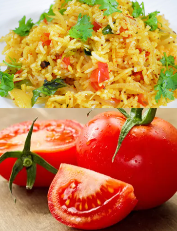
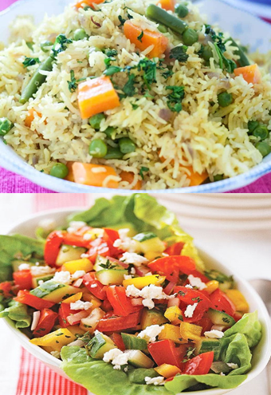
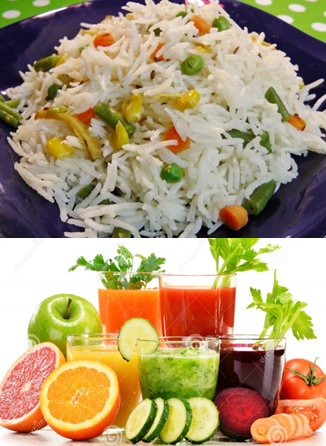

-7 Day's Diet Plan for Weight Loss-
- The 3-day military diet is actually split into 2 phases over a 7-day period. For the first 3 days, you must follow a set low-calorie meal plan for breakfast, lunch and dinner. There are no snacks between meals. Total calorie intake during this phase is roughly 1,100–1,400 calories per day.
- This is much lower than the average adult’s intake, but you can check your own calorie requirements using this calculator. For the remaining 4 days of the week, you are encouraged to eat healthy and continue to keep your calorie intake low. Proponents of the diet claim that you can repeat the diet several times until you reach your goal weight.
- The secret to maintaining an ideal weight is to not skip meals and timing your meals. Consuming decent morsels of protein-rich food every two hours ensures you are satiated and do not delay eating your next meal or overeat a big meal (like a dinner or lunch).
DAY 1

1. The first day is the most important day in your diet plan program. You are just stepping into the world of knowing how you can reduce your body weight and that too in 7 days time.
2. The diet plan says that the first day of the diet must be a complete fruit diet day. You have the option of eating all the fruits that you possibly can and also take in whatever fruit that you like. But, it is important for you to make sure that you avoid bananas from your fruit list on day one.
3. Some of the suggested fruits that you can take on the weight loss diet plan are watermelons and cantaloupe.
4. You are also supposed to drink about 8 to 12 glasses of water on day one and make sure that you do not even touch any other food items, not even raw or boiled vegetables. If you need this plan to work effectively in your body, then you should only consume various kinds of assorted fruits throughout the day.
5. If you feel hungry, try to eat more fruits and of course drink water.
DAY 2

1. If day one was a day that gave you the opportunity to binge on your favorite fruits, then day two provides you an opportunity to eat only vegetables throughout the day.
2. You can take in the vegetables that you like both in the raw state and in cooked state. But, it is important for you to make sure that you do not use any sort of oil while cooking vegetables. Consuming boiled vegetables are also a good option.
3. You can take any vegetable that you like including potatoes. But, it would be safe for you to try out the boiled potatoes early in the morning itself so that the carbohydrates get burnt during the course of the day.
4. Some of the common vegetables that are good to be consumed on day 2 of the lose weight diet regime are: cooked beans, raw and cooked carrot, broccoli, cucumber, boiled bottle and ridge gourd, lettuce, boiled cabbage and so on.
5. There is no doubt that your digestive system will completely undergo an overhaul by the evening and you also would need to visit the toilet more times than before. Make sure that you do not miss out on your daily dose of 8 to 12 glasses of wateralong with a strict veggie diet on day two.hungry, try to eat more fruits and of course drink water.
DAY 3

1. The third day of your weight lose plan will allow you to take both vegetables and fruits for the entire day.
2. Make sure that you do not touch potatoes in the veggie section and also make sure that you do not consume bananas from the fruit section.
3. You have the option of going for a fruit diet in the morning followed by a veggie diet in the afternoon and a fruit diet in the evening followed by a veggie and fruit diet at night.
4. The options and the permutations and combinations of consuming the fruit and vegetable diet or combination of both the diets is totally left to your disposal.
5. You can decide on what you would like to have provided it is fruits and vegetables. Never miss the option of drinking 8 to 12 glasses of water even on day three as well
DAY 4

1. Day four would interest dieters looking for the fastest way to lose weight as it is filled with a banana and milk diet. Yes, you need to take at least a minimum of 8 to 10 bananas throughout the day and are allowed three glasses of milk.
2. You might be a bit worried if this diet will make you feel hungry. But, on the contrary, you will feel quite full with this diet plan at the end of the day.
3. You need to divide the bananas and the glasses of milk properly so that you do not feel any kind of starvation on the fourth day of diet plan regime.
4. Consuming a banana and a glass of milk in the morning followed by a couple of bananas during the midday will be an ideal start to day four.
5. You can take a glass of milk and two bananas for lunch on day four. You can also take a couple of bananas in the evening or even three bananas and then take a couple of bananas and a glass of milk at night.
6. There will be no sign of hunger at all throughout the entire day if you follow this simple day four regime.
DAY 5

1. If you love having a feast, then day 5 of the lose weight diet plan offers you the opportunity to a feast on day five.
2. It is the day when you can have a cup of rice for lunch and take about six to seven tomatoes throughout the day.
3. As there is every chance of producing a lot of uric acid in your body, it is ideal for you to increase the water level from 12 glasses to 15 glasses on day five.
DAY 6

1. You are in for another feast day on day six of the diet plan. Here too, you will be allowed to take a cup of rice in the afternoon for lunch and you also need to stick on to a vegetable diet for the rest of the day.
2. It is also important for you to make sure that you take at least 8 to 12 glasses of water on day six as well.
3. This is the penultimate day of your seven day diet plan regime and you are sure to feel quite lighter than before by the sixth day.
4. There is no doubt that you will also be improving your digestive system completely.
DAY 7
